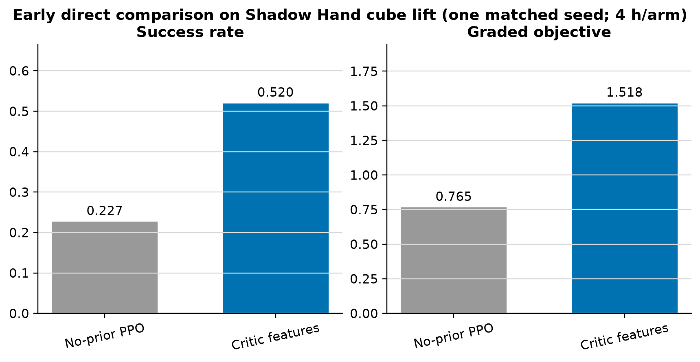

Research Project
Accelerating Robot Policy Training
A gamut of experiments exploring the use of intelligent reasoning models to accelerate robot policy training. The core intuition is distilling the intelligence of reasoning LLMs into robot policy models. I have approached this in several different ways, including using LLMs generated policies as a demo, biasing exploration with LLM determined priors, dense reward shaping, agent harnesses combining LLMs with policy networks, residual policies, and more techniques. I will outline two techniques that I have developed that show the most promise in this post.
WORK IN PROGRESS
While this remains a work in progress, I will post updates as a chronological sequence of update posts, and when it is finished, I will convert it into a single narrative.
Critic Features
My first successful outcome and direction with my LLM aided policy research. I have found that you can inject LLM authored policies into the critic and achieve great efficiency gains in robot RL training.
I noticed that the LLM authored policies are generally capable but also usually struggle to perform more difficult skilled tasks. The naive approach of training a residual policy on a schedule of LLM authored actions works until the critical point, where the faults in the LLM authored actions greatly impair the neural policy. Therefore, I needed an approach that allowed for a softer, suggestive LLM authored action that the overall policy can use when it's beneficial, and ignore when it's harmful.
I tried around a dozen approaches to this, including warm starting the neural policy on the LLM authored actions, allowing the LLM to author a handoff stage where the polcy takes full control, and several others. The approach that worked best however was simply inputting the LLM authored action program into the critic model, allowing it to see suggested actions. It can therefore learn to assign higher value to these actions when they are beneficial, or lower value when they are harmful, allowing the actor model to quickly converge on functional behaviour. My results are so good in fact that I am considering writing a formal scientific paper of this approach to publish - but I just haven't had the compute to devote to the formal set of experiments needed to make a rigorous paper.
We can see below the results of a 4 hour training run comparing it to the same configuration without the injected LLM program into the critic, and we see a much greater success on a basic Shadow-Hand (full 5 digit hand, with 28 DOF) grasping environment. In general, on longer runs, I have found the baseline and the critic injected program saturate this task within 12 hours, but the critic injected program saturates it much faster.

Another result I have found is that increasing the diversity of LLM authored programs injected to the critic also improves performance over using just 1 program. By using 3 different LLM authored programs simultaneously, I found over (albeit limited testing) that it sharply outperformed a single program, reaching 50% success over 2 hours of training, versus 15% success for a single program. I found the raw baseline training to generally have very poor success by two hours, often around 0%.
I do have one confounding result, however, which is that on a couple of experiments, I have found replacing the program with random gaussian noise also yields very strong results. I don't know if this is just explained by variance, or if I misconfigured some hyperparameters for the critic injected program (such as using a bad LLM authored program), so this will require some ironing out. I have done many training runs that show that the critic injected program improves performance, and that this is not the result of more critic parameters, so either this result is confounded by noise, or simply adding noise to the critic also greatly improves performance (I think this is unlikely). I'll also note that the critic estimates value more accurately with the injected program than with injected noise.
Thus the immediate next step is resolving this problem, which can be done by double checking the critic injected program configuration, and comparing it to the random noise and basic baseline over a long training run, with multiple seeds and different LLM authored programs.
Cerebellum Inspired Lower Level Policies
This project was the other most promising approach to integrating LLM authored robot control programs into neural policies. With this approach, I focused on creating a system that allows for a composition of neural models of increasing capabilities, splitting the work of robot control into a hierarchy of subsystems. The design of this approach was roughly inspired by vertebrate brain motor function control: with cortical regions planning and coordinating general movement patterns, and cerebellar networks refining the timing and force of muscle activations. A powerful frontier LLM with robot control tools like inverse kinematics, stands in for the cortex, suggesting actions to solve robot control problems, and a lower level residual policy network refines the timing and degree of the robot's actuators to close the gap between the rough LLM actions and a successful action.
To facilitate this, I designed an authoring framework for the LLMs to use, specifying that they generate a control program that when compiled into actions can have both the timing and degree of robot actuation be adjustable parameters.
I found that this produced a generally very competent LLM authored program, and one that can be easily trained to a high standard of performance with the lower level neural policy. I also found; however, that the performance is very sensitive to the quality of the program, which I call the "motor tape". On 1 hour training runs (around 10 000 rollouts), I found task success for grasping objects to range from 15% to 98.4%, with rapid oscillations late in training (something I am working on). Regardless, with smart checkpointing, this system can reach near 100% success on this task with no expert SFT on fewer than 10 000 simulated rollouts. I have also found that a single lower policy can be jointly trained with multiple different tapes with strong performance, although the lower policy needs more training time to get sufficient rollouts from each motor tape.
I have moved on to testing the motor tape and training framework to other robots and tasks. Preliminary results indicate easy saturation of easy tasks without training, and saturation of more difficult tasks like pick and place with a robot arm and hand within 10 000 rollouts. I am currently training shared lower policies across diverse ranges of tasks, like pick and place, button pressing, grasping, drawer opening and closing and others, all with different shapes and initialization configurations. Preliminary results remain promising for joint training of many tasks with diverse tapes on a single lower policy network.
When applying this technique to problems with longer horizons and more complex sequences of actions, like pick and place, I was having great diffuculty with the policy collapsing and oscillating. I tried many things to fix this, but what ended up working was removing the rollout fragmentation, which while incresaing performance greatly on simple tasks, like grasping, emperically causes collapse in more complex action policies. Simply removing it stopped the collapse problem, and the lower policy now consistently improves the authored motor tape. I am now experimenting with ways to enable proper credit attribution with long rollouts, to replace the functionailty of fragmentation. My first set of experiments is sweeping discount factors. If this doesn't improve performance, I will look into hyperbolic discounting.
A sweep on discount rates has found little effect on the overall performance. I have also found some initialization bugs, with objects initializating in impossible to reach areas. I'm currently fixing up the tape author prompts to be more aware of the robot geometry, so that they can organically choose more effective actions, testing small open models on their ability to generate motor tape programs, adding a VLM layer to the system, and analyzing the emperical expressivity of the learned lower policy. Much of the experimentation with lower policy bounds was done under the fragmented training regime, which confounds the results. Greater expressvity of the lower policy will allow it to correct more motor tape errors and be generally more powerful.
Long Term Vision
I hope to maximize the transfer of robot control abilities across a compositional hierarchy of control systems, with low level controllers functioning like a cerebellum, controlling fine scale timing, force and pressure, a high level reasoning LLM creating high level approaches to solving novel tasks, and a medium level VLA type system translating the LLM program into functional rough policies.
The motivation of this is to create a robot control system that can solve novel problems without any human simulation, to solve emergent problems in fully autonomous production systems of the future.
Code attached: